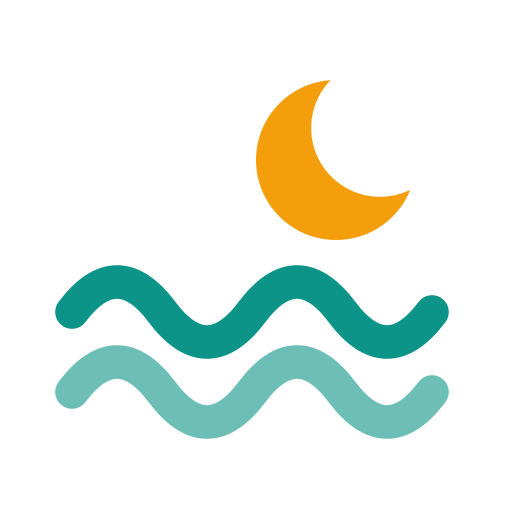

ArabTides
المد والجزر العربي
دليل الهوية البصرية
arabtides.com
arabtides.com
الفكرة
هلال فوق موجتين: القمر يحرّك البحر. علامة بسيطة تُقرأ بحجم صغير، وتربط المد والجزر بالقمر والصيد والسماء — كل ما يقدمه الموقع.
الشعار
الاستخدام الأساسي على الكحلي. اترك مسافة فارغة حول الشعار لا تقل عن ربع عرض العلامة.
ArabTides
المد والجزر العربي
ArabTides
المد والجزر العربي

الألوان
الكحلي هو الأساس، والفيروزي للتمييز. الرملي للقمر فقط وبكميات قليلة. المرجاني للجزر المنخفض فقط.
كحلي البحر العميقالخلفية الأساسية
#0B2540
أزرق المحيطالتدرجات والأسطح
#0F3D5C
فيروزي المداللون المميز على الفاتح
#0D9488
فيروزي البحيرةاللون المميز على الداكن
#2DD4BF
رمل القمرالقمر والإبراز
#FDE68A
مرجاني الجزرالجزر المنخفض فقط
#F43F5E
زبد البحرالخلفية الفاتحة
#F4F8F9
حبرالنصوص على الفاتح
#0F172A
الخطوط
كلها مجانية من Google Fonts. الأرقام دائماً بخط Inter وبالأرقام الغربية لسهولة القراءة.
متى يرتفع البحر؟
مواقيت المد والجزر وأفضل أيام الصيد لكل ميناء عربي.
08:30 · 2.98 م
نبرة الكلام
- عربية فصحى بسيطة، بلا لهجات.
- جمل قصيرة ومعلومة مفيدة في كل منشور.
- نتحدث إلى الصياد ومحب البحر كصديق خبير.
- الأرقام دقيقة، ومصدرها مذكور (EOT20).
- نذكّر دائماً: تقديرات فلكية، ليست للملاحة.
إنستغرام
- المقاس 1080×1350 لكل منشور وشريحة.
- الغلاف كحلي، والشرائح الداخلية فاتحة.
- عنوان الغلاف ٦ كلمات أو أقل.
- الشعار والموقع ورقم الشريحة أسفل كل شريحة.
- خط لا يقل عن 32px.
- لا تمدّ الشعار ولا تغيّر ألوانه.
- لا تضع أكثر من لون مميز واحد في الشريحة.